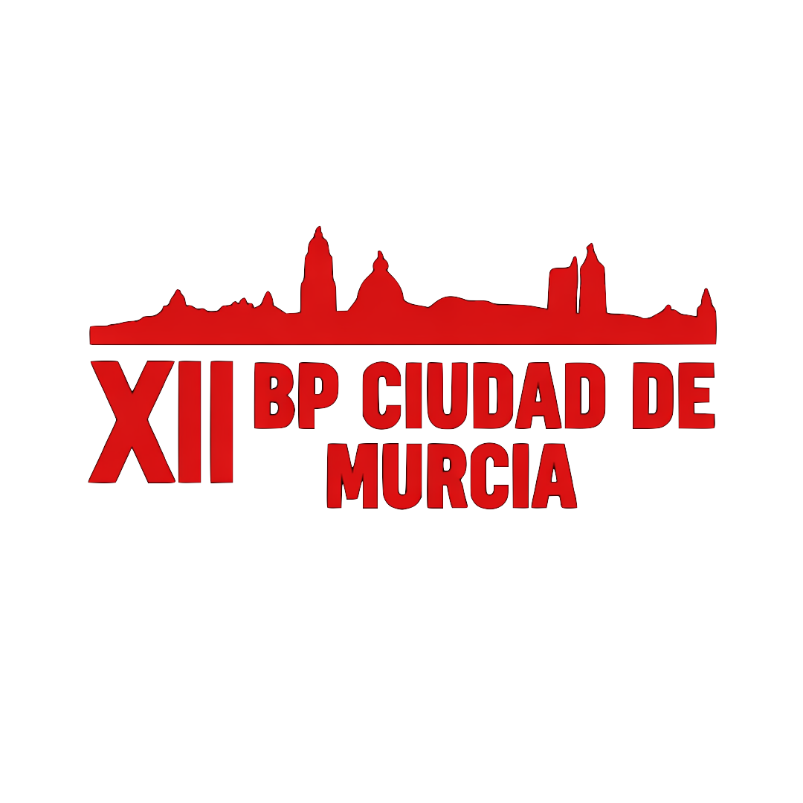

Ediciones BP Murcia
Selecciona la edición del torneo o accede directamente al temporizador oficial.
Próxima Edición

BP Murcia 2027
XII Torneo de Debate BP Ciudad de Murcia. Fechas e información en preparación.
Edición XI
BP Murcia 2026
XI Torneo de Debate BP Ciudad de Murcia. Equipos, adjudicación y cuadro de honor.